主存储器之 ROM 链接到标题
只读存储器 链接到标题
- 早期的只读存储器—在厂家就写好了内容
- 改进 1—用户可以自己写—一次性
- 改进 2—可以多次写—要能对信息进行擦除
- 改进 3—电可擦写—特定设备
- 改进 4—电可擦写—直接连接到计算机上
掩膜 ROM(MROM) 链接到标题
MROM 有芯片制造商在制造时写入内容，之后只能读不能写入，其基本存储原理是以元件的”有/无”来表示该存储单元的信息(“1”或”0”)。
- 行列选择线交叉处有 MOS 管为”1”
- 行列选择线交叉处无 MOS 管为”0”
PROM(一次性编程) 链接到标题
- 使用熔丝存储数据，用户可根据自己的需要来对其填入内容，属于一次性写入的存储器。部分 PROM 在出厂时数据全为 0，用户可以将其中的部分单元写入 1，以实现对其”编程”的目的。
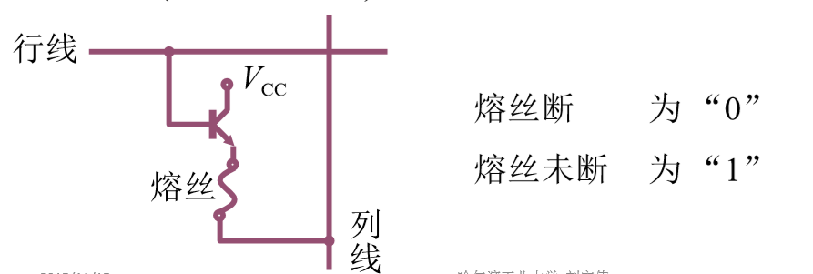
EPROM(多次编程) 链接到标题
使用悬浮栅存储数据，为了能多次修改 ROM 的内容，产生了 EPROM，EPRM 使用高压写入数据，当需要修改时，可使用紫外线将其全部内容擦除(不能局部擦除)。但是使用紫外线并不方便，因此产生了 EEPROM.
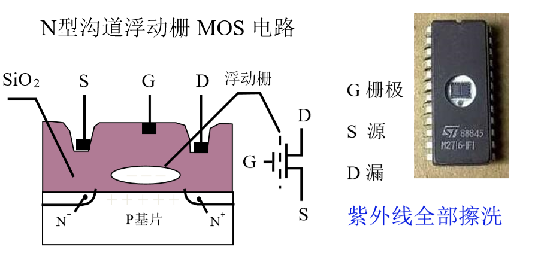
- D 端加正电压，形成浮动栅，S 与 D 不导通为”0”
- D 端不加正电压，不形成浮动栅，S 与 D 导通为”1”
EEPROM(多次性编程) 链接到标题
EEPROM 与 EPROM 运作原理一样，不但写入数据使用高压，擦除数据也是用了高压。
- 电可擦写
- 局部擦写
- 全部擦写
Flash Memory(闪速型存储器) 链接到标题
闪存虽然属于内存的一种，但不同于内存。众所周知，如果没有电流供应，内存中的内容会消失，闪存在没有电流供应的情况下仍能长久的保持数据，其存储特性相当于硬盘，集合了 ROM 与 RAM 的长处。一般闪存按块读取数据。
存储器容量的扩展 链接到标题
- 位扩展(增加存储子长) 用 2 片 1K_4 位的存储芯片组成 1K_8 位的存储器，需要 10 根地址线，8 根数据线。(2^10=1K)
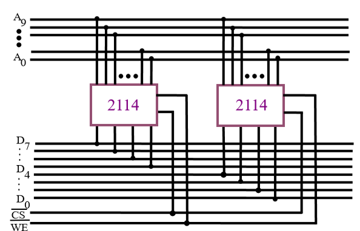
- 字扩展(增加存储字的数量) 用 2 片 1K_8 位存储芯片组成 2K_8 位的存储器，需要 11 根地址线，8 根数据线。
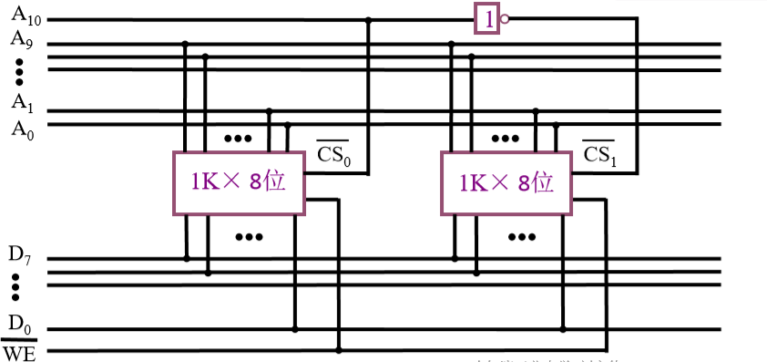
- 字、位扩展 用 8 片 1K_4 位存储芯片组成 4K_8 位的存储器，需要 12 根地址线，8 根数据线。
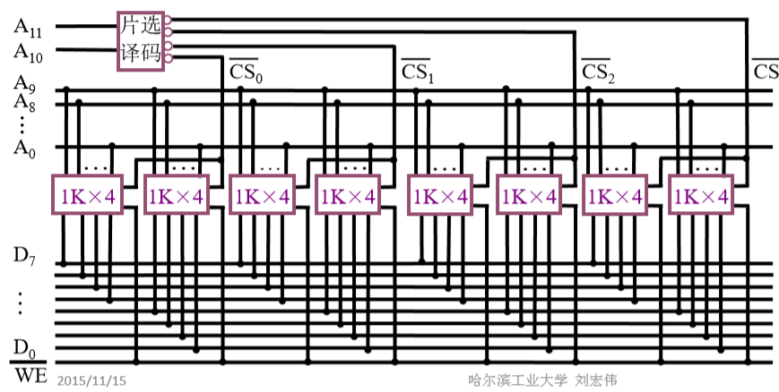
存储器与 CPU 的连接 链接到标题
- 地址线的连接
- 数据线的连接
- 读/写命令线的连接
- 片选线的连接
- 合理选择存储芯片
- 其他(时序、负载)
例题 链接到标题
假设同前，要求最小 4K 为系统程序区，相邻 8K 为用户程序区。
- 写出对应二进制地址码
- 确定芯片的数量及类型
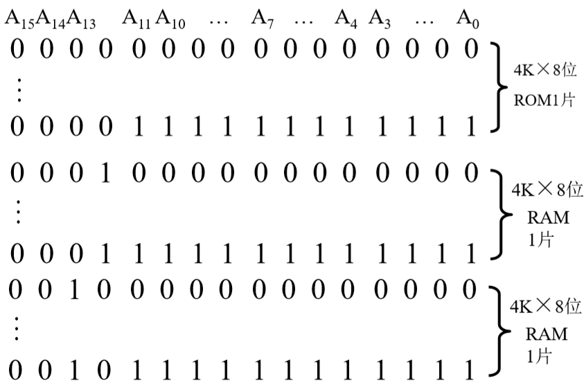
- 分配地址线
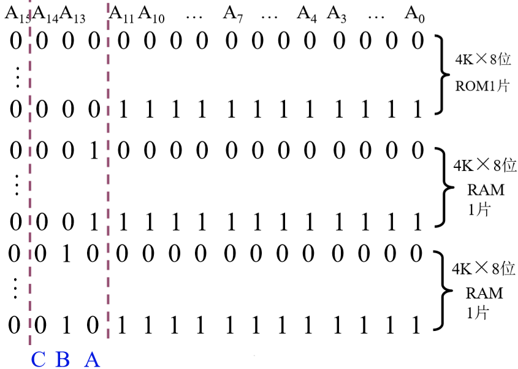
- 确定片选信号
存储器的校验 链接到标题
- 合法代码集合
- {000,001,010,011,100,101,110,111} 检 0 位错，纠 0 位错
- {000,011,101,110}合法编码的特点，1 的个数为偶数个，或 0 个，检 1 位，纠 0 位。
- {000,111}合法编码为 1 的个数是 3，检 1 位，纠 1 位。
- {0000,1111}检 2 位，纠 1 位
- {00000,11111}检 2 位，纠 2 位。
检测能力与任意两组合法代码之间二进制位的最少差异数有关。
编码的最小距离 链接到标题
任意两组合法代码之间二进制位数的最少差异、编码的纠错、检错能力与编码的最小距离有关。
L-1=D+C（D>=C）
L: 编码的最小距离 L=3
D: 检测错误的位数，例：具有一位纠错能力
C: 纠正错误的位数
汉明码的组成 链接到标题
- 汉明码采用奇偶校验
- 汉明码采用分组校验
- 汉明码的分组是一种非划分方式 一组数据为 1234567，分成 3 组，每组有一位校验位，共包括 4 位数据位，而汉明码的分组如下：
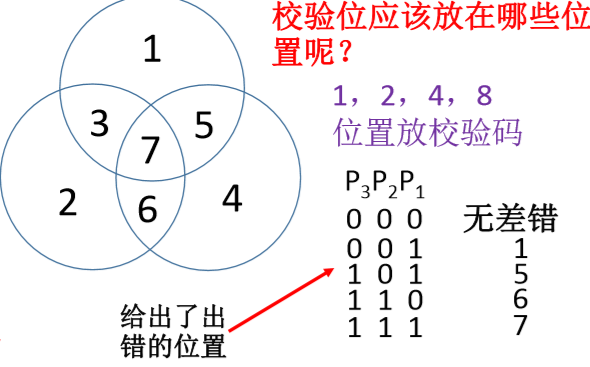
若第一组出错，其他两组没错，则出错位为 1.若第三组与第一组出错，第二组没错，则出错位置为第三组与第一组公共位置为 5，如果第三组与第二组出错，第一组没错，则出错位为 6，将三组 P3p2p1 倒序排列出错的位置恰好为其二进制对应十进制的数据。
奇偶校验：添加一位校验位，判断 1 的个数是奇数还是偶数，无法纠错。 如果将上述数据分组，然后分别添加校验码，可以得到两个校验码，因此可以纠 2 位。
汉明码分组 链接到标题
第一组 XXXX1
第二组 XXX1X
第三组 XX1XX
第四组 X1XXX
第五组 1XXXX
相应 1，2，4，8…位置放校验码。1，2，4，8 是每一个部分独有的，如果数据的第 1 位与第 3 位为 1，就是第一组与第三组所共有的数据，以此类推。
组成汉明码的三要素 链接到标题
- 汉明码的组成需要增添？位检测位 2^K>=n+k+1
- 检测位的位置？ 2^i(i=0,1,2,3,…)
- 检测位的取值？ 检测位的取值与该位所在的检测”小组”中承担的奇偶教研任务有关。
各检测位 Ci 所承担的检测小组为 链接到标题
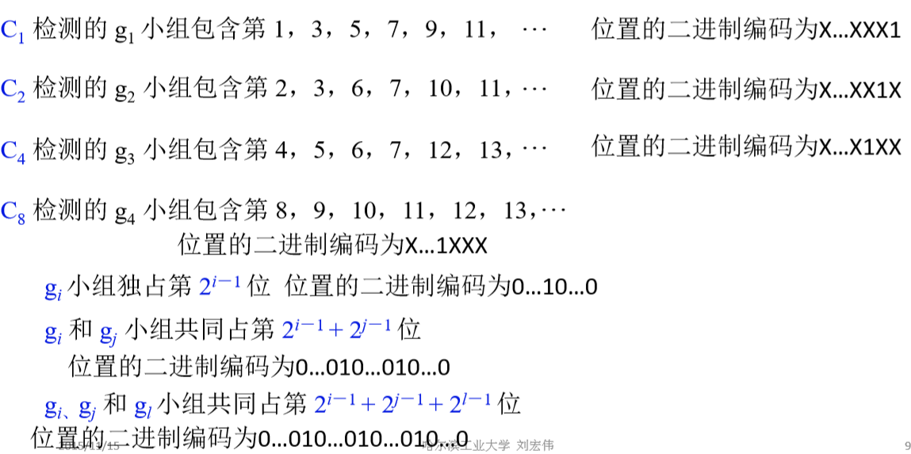
例题 链接到标题
求 0101 按”偶校验”配置的汉明码
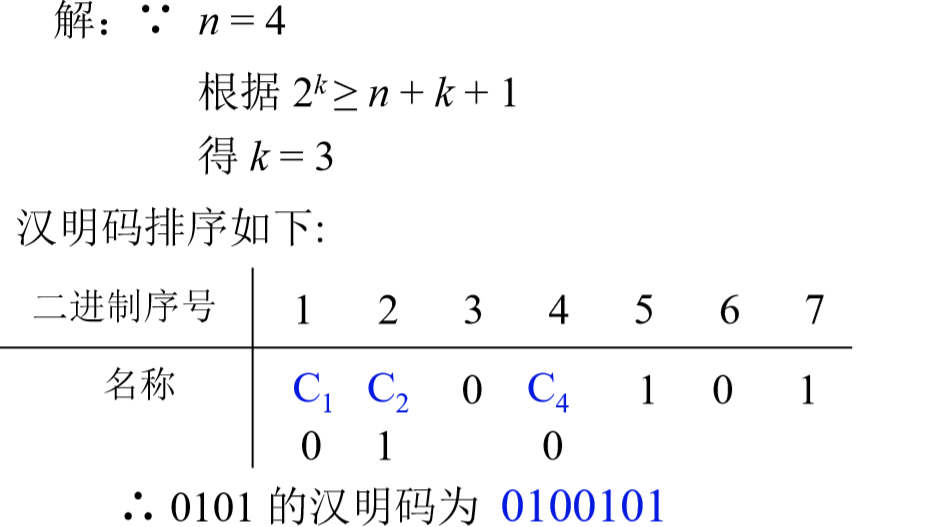
按配偶原则配置 0011 的汉明码
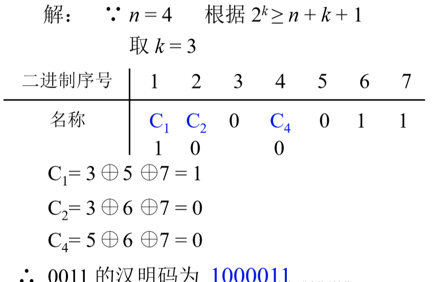
汉明码的纠错过程 链接到标题
每一组形成新的检测位 Pi，其位数与增添的检测位有关。

已知接收到的汉明码为 0100111(按配偶原则配置)试问要求传送的信息是什么？
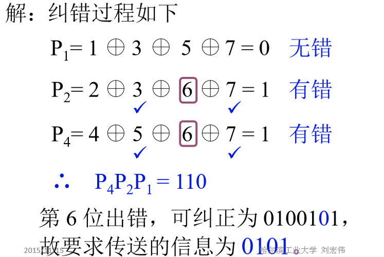
写出按偶校验配置的汉明码
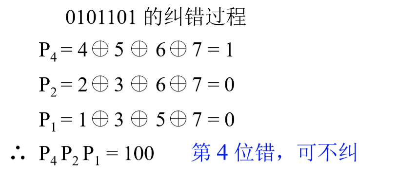
提高访存速度的措施 链接到标题
- 采用高速器件
- 采用层次结构 Cache-主存
- 调整主存结构
- 单体多字系统，增加存储器的带宽
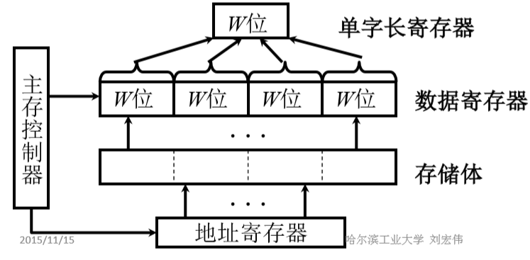
- 多体并行系统
- 高位交叉，顺序编址
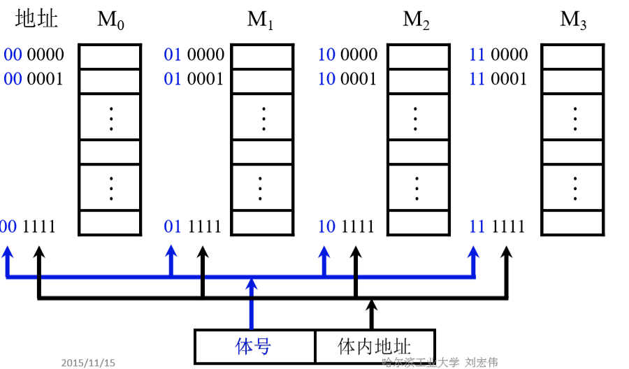
- 高位交叉，各个体并行工作
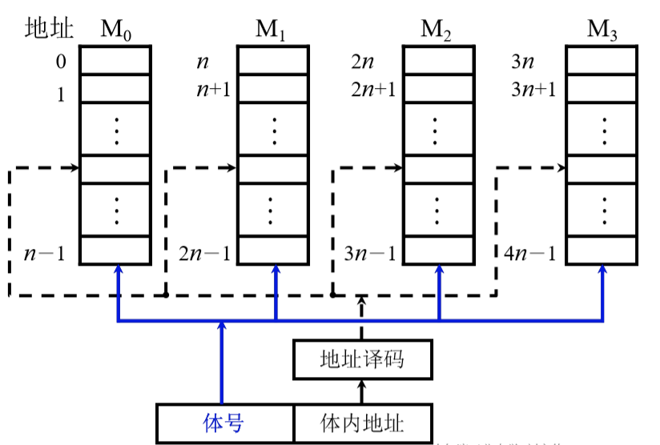
- 低位交叉，各个体轮流编址
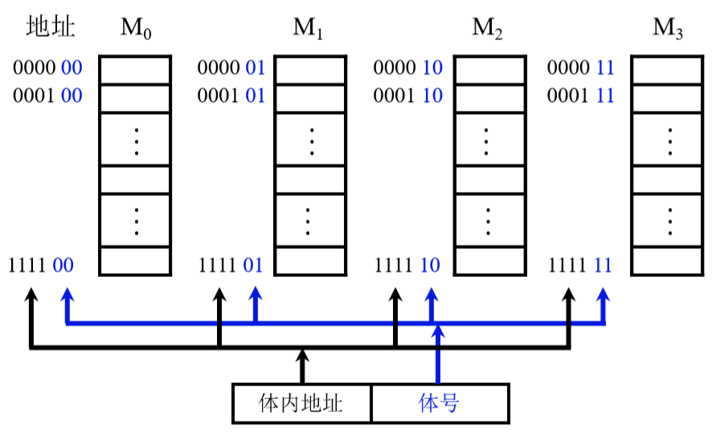
- 低位交叉，各个体轮流编址
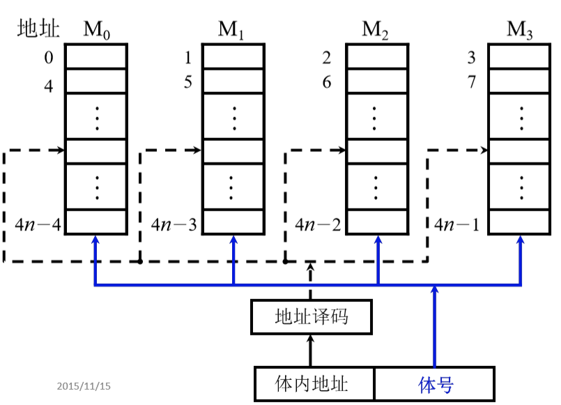
低位交叉的特点 链接到标题
在不改变存取周期的前提下，增加存储器的带宽
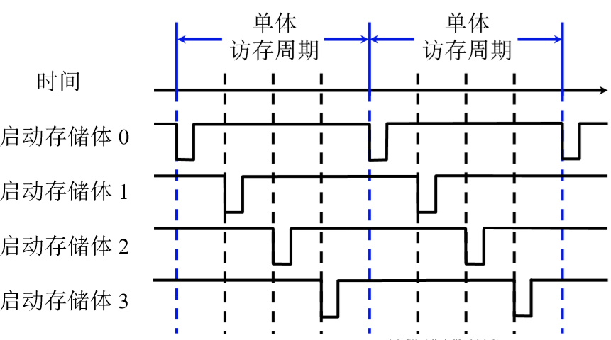
设四体低位交叉存储器，存取周期为 T，总线传输周期为 τ，为实现流水线方式存取，应满足 T=4τ。
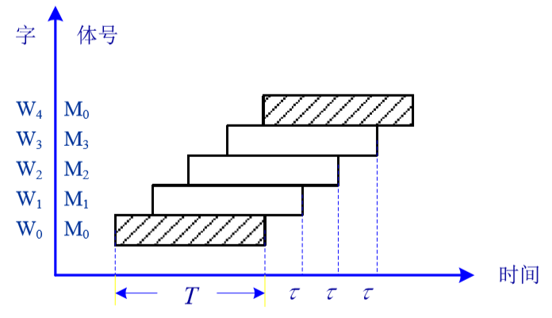
连续读取 4 个字所需的时间为 T+(4-1)τ.
高性能存储芯片 链接到标题
- SDRAM(同步 DRAM)
- RDRAM
- 带 Cache 的 DRAM 在 DRAM 的芯片内集成了一个由 SRAM 组成的 Cache，有利于猝发式读取。